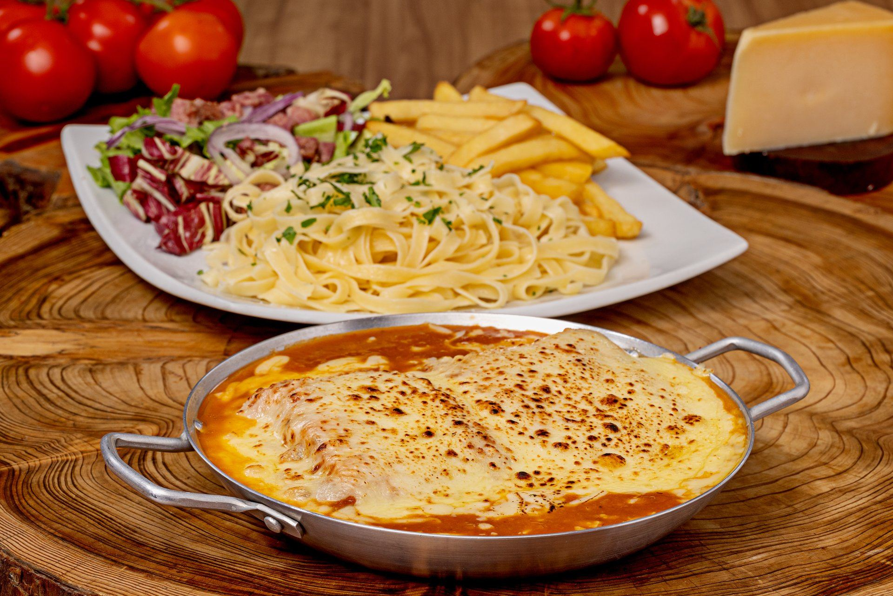

Festival
Parmegiana
19 de maio — 7 de junho de 2026
O parmegiana artesanal da chef Juliana — empanado na hora,
molho caseiro e aquele queijo gratinado que só o Ana Bella sabe fazer.

O parmegiana que
a cidade espera
Já na quarta edição do Festival Parmegiana do Curitiba Honesta, o Ana Bella traz o que sempre fez de melhor: um prato preparado com ingredientes selecionados, empanado artesanalmente e servido com o carinho de uma cozinha familiar.
A chef Juliana conduz cada etapa — do molho caseiro ao ponto certo do queijo — para que cada garfada lembre comida de mãe.
Vila Izabel · Curitiba
Do começo ao fim, feito à mão
Filé mignon empanado, frito e coberto com molho de tomate feito à moda da casa, por cima uma camada de presunto e queijo muçarela gratinado. Acompanha fettuccine da casa com manteiga, batata frita com salsinha e salada de escarola, bacon e cebola roxa.
Filé mignon
Não é qualquer corte. É filé mignon — macio, empanado na hora com farinha e tempero caseiro, frito até a casquinha dourar do jeito certo.
Molho feito à moda da casa
Tomate, tempero e tempo — a Juliana faz o molho do zero, como sempre fez. É o que transforma um parmegiana comum em algo que você vai querer de novo.
Presunto e muçarela gratinada
Uma camada de presunto, muçarela por cima e forno até gratinar. Aquele queijo puxento que estica no garfo é o sinal de que está pronto.
Acompanhamentos que completam
Fettuccine da casa com manteiga, batata frita com salsinha e salada de escarola com bacon e cebola roxa. Um prato completo, do jeito que tem que ser.
O que é o Curitiba Honesta
O Curitiba Honesta é um festival gastronômico que reúne restaurantes de Curitiba em torno de um prato único, com preço fixo. Uma forma honesta de apresentar o melhor de cada cozinha para a cidade.
O Ana Bella está presente desde a primeira edição — e em cada uma delas leva o que sempre soube fazer: um prato preparado com ingredientes selecionados, cuidado real e aquele tempero que só uma cozinha de família tem.
Ver todos os restaurantes participantes →Venha provar antes que acabe
Nossa família servindo a sua famíliaO festival vai de 19 de maio a 7 de junho. Venha viver essa experiência no Ana Bella.
Vila Izabel · Curitiba